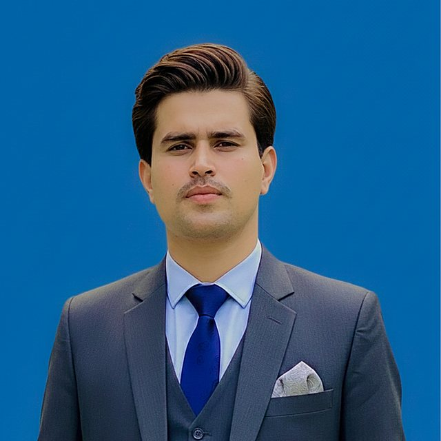

Usama Mujahid
Final-year Civil Engineering student at COMSATS University Islamabad, Abbottabad Campus, Pakistan, and photographer, videographer and digital content creator.
Dossier International Youth Festival 2026 — Thematic axis: Media, Journalism and Global Narratives
Until September 2026, I had never left Pakistan. Russia, for me, was a country made of screens: news bulletins about the war in Ukraine and clips shared on social media. When my application to the International Festival of Youth was accepted in August, my excitement came with a quiet unease. I was about to travel abroad for the first time, and I was travelling towards a place I knew only as a headline.
I checked in at Yekaterinburg on 10 September, a day before the festival began. I came as a participant from Pakistan and a final-year civil engineering student, but also as a photographer and content creator who has spent years telling stories through a camera. That double position led me to the question at the centre of this article: how much of what we think we know about another country comes from direct experience, and how much from the stories we consume?
Established by presidential decree (President of Russia 2025), the festival was organised by Russia’s Federal Agency for Youth Affairs (Rosmolodezh) and ran from 11 to 17 September under the motto “Follow Your Dream” (World Youth Festival Directorate 2026; Daily News Egypt 2026). It brought together about 10,000 young people, 5,000 from Russia and 5,000 from abroad, representing 191 countries and selected from more than 113,000 applications (Tehran Times 2026).
It was a state-organised event with its own message about Russia. What follows is not an assessment of that message but an account of what happened to my own assumptions.
Before travelling, my image of Russia came almost entirely from international news and social media. Since 2022, much of that coverage has understandably centred on the war, and in my mind the country had become associated with conflict and uncertainty. Pakistanis who had attended earlier festivals told me they had felt welcome; I did not fully believe them.
What I found was more ordinary and more complex than the picture I had carried.
Accreditation, accommodation and transport were tightly organised; there were delivery robots and technology exhibitions I had not expected. The volunteers left the deepest impression. They were present from breakfast to the evening programme, and even when busy with their own tasks they would stop to give directions or solve a small problem.
My experience does not tell me whether Russia is “safe” in any general sense, and it does not prove that the reporting I had consumed was wrong. What it showed me is narrower but important: the image I had formed from a distance was not the same thing as the everyday life I met on the ground.
I speak Urdu and some English, and I had assumed that English would be enough. Outside the festival’s English-speaking circles, it often was not. In the first days we communicated with gestures: to ask where the food was, we pointed and mimed eating. Translation apps and other participants helped, and we gradually learned simple Russian: greetings, “how are you”, spasibo. By the end of the week, these words were part of our routine.
The experience made me see language as a structural border rather than a personal inconvenience. It decides who you can talk to, how quickly a conversation becomes a friendship, and how much information you can reach.
Much of the local coverage of the festival was in Russian, natural for a Russian audience, but it meant I often learned about events late or second-hand. On a larger scale, when information about a country is available mainly in its own language, international audiences tend to know it through external, often English-language, reporting. That reporting opens events to the world, but it is also a filter.
Even the official opening touched on language: in his video address, President Vladimir Putin dwelt on the Russian word mir, which means both peace and the world (President of Russia 2026). My own lesson was simpler: English is enough, until you arrive somewhere it is not.
For someone from Darazinda, in Khyber Pakhtunkhwa’s Dera Ismail Khan district, visiting dozens of countries is not a realistic plan; the festival brought them to one place. I ate, walked, played games, attended programmes and went to the gym with participants from Russia, India, Belarus, Spain, Afghanistan, Vietnam, China, South Korea, Nepal, Bangladesh, Uganda, Zimbabwe and elsewhere.
One conversation stayed with me. A participant from an African country told me he was the only delegate from his nation at the entire festival. Whatever thousands of others would remember about his country, they would largely remember through him.
The Culture Walk made the same point visually. Participants appeared in traditional dress, carrying flags, singing, dancing and speaking their languages; I represented Pakistan and my Pashtun identity. It reminded me that countries are represented not only by governments and diplomats but by ordinary young people who choose, for an afternoon, to carry their culture in public.
The same festival that displayed robots was full of traditional clothing and old songs. The future may be digital, but identity remains deeply cultural.
Several people I met knew little about Pakistan beyond an association with insecurity. I talked about hospitality, food, the northern mountains, Pashtun traditions and the Pashto language, and ordinary life in Abbottabad, where I study.
The most careful conversations were with Indian participants. We discussed our countries’ relations, visas, trade and tourism. When I asked some of them where their negative impressions of Pakistan came from, a few described the media and information environment around them as influential.
These were individual conversations, not a survey, and they made me ask the same question about my own assumptions. Some told me their families had lived in Rawalpindi or Lahore before moving to India around the 1947 Partition of British India. Suddenly we were talking about grandparents and memory rather than states.
I told them that if they ever visited Pakistan they could contact me, and we exchanged numbers.
At a concert, the Pakistani song “Pasoori” was played and the Pakistani participants were called forward. For a few minutes, a song from home turned a crowd of strangers into an audience for Pakistan.
None of this was diplomacy in an official sense; we did not represent governments. But a country’s attractiveness rests partly on its culture and on personal contact (Nye 2004), and social psychologists have long found that meaningful contact between groups tends to reduce prejudice (Allport 1954; Pettigrew and Tropp 2006). At the festival, every participant was, informally, a cultural ambassador.
A century ago, Walter Lippmann (1922) described how people act on “the pictures in our heads”, images of a world most of them never see directly. Journalism supplies these pictures, and it does so selectively: framing research shows how media select and emphasise certain aspects of reality (Entman 1993).
Selection is not falsehood. But an audience that sees a country only through its crises will build a picture made mostly of crises.
Social media adds fragments: vivid, personal and stripped of context. Before Russia, my picture combined both, and the Indian participants I spoke with described something similar about Pakistan. We had each been shaped by stories before meeting anyone from the other side.
I was not accredited as festival media, something I later regretted given the access media participants had. Still, I filmed constantly. I published Reels, Stories and videos on Instagram, Facebook and TikTok, mainly for Pakistani audiences.
The official festival media team photographed me on several occasions and reposted some of my Reels and Stories. People asked who could apply, whether it was funded, how selection worked and, most often, what Russia was actually like.
I answered only from what I knew. Without planning it, I had become a small information bridge between an international event and people at home.
This is a new form of international communication. Journalists report from events; now a participant with a phone can also document, explain and answer questions across borders in real time.
That reach brings responsibility. Creators can remove context, exaggerate, reproduce stereotypes or present a managed environment as the whole truth. My Reels showed a well-organised festival and friendly faces; they did not, and could not, show everything about Russia. I now think a creator’s first duty is to be honest about what the camera did not see.
The lesson is not to trust experience and distrust media. My week was real, but partial: one city, one event, organised by state institutions with their own message.
First-hand experience gives human context; it does not give scale, history or verification. Journalism tells us what is happening; social media shows fragments of how it looks; personal interaction shows who the people are.
Youth exchanges can connect all three, provided participants and their audiences remember which kind of knowledge they are holding.
The festival ended on 17 September, but the conversations did not. Our WhatsApp, Telegram and Instagram groups are still active; people still share their daily lives. Some connections will fade; others may become collaborations or lasting friendships.
The real outcome of a youth festival may be less the week itself than the network that survives it.
I left Pakistan with a media-shaped image of Russia and a belief that English would carry me anywhere. I returned with a more complicated picture, a small Russian vocabulary, friends in countries I had known only by name, and a sharper sense of responsibility for what I post.
Headlines are not the enemy. They are the first page, and often an important one. But a page is not the whole book, and a country is always larger than the story that reaches us about it.
We are told not to judge a book by its cover. Sometimes that is not enough; we have to open the book. For me, opening it meant travelling to Russia, listening, and being listened to in return.